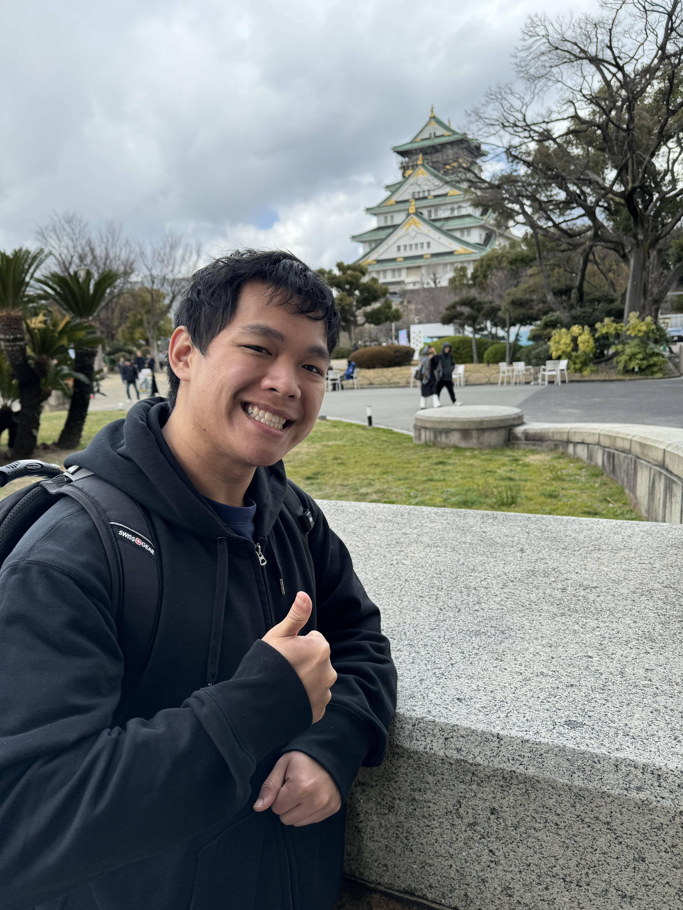

Hey! I'm Brian Dang 👋
I recently graduated from the University of Massachusetts Amherst with a degree in Computer Science.
My primary interests lie in Software Engineering, Web Development, Networking, Information Technology, and Cybersecurity.


Work Experience
- Headstarter AI (July 2024 - Present): Software Engineer Fellow
- CVS (December 2023 - February 2024): Shift Supervisor
- UMass Auxiliary Enterprises (September 2023 - May 2024): Food Preparation Assistant/ Cashier & Retail
- Siege Technologies (June 2023 - August 2024): Software Engineer Intern